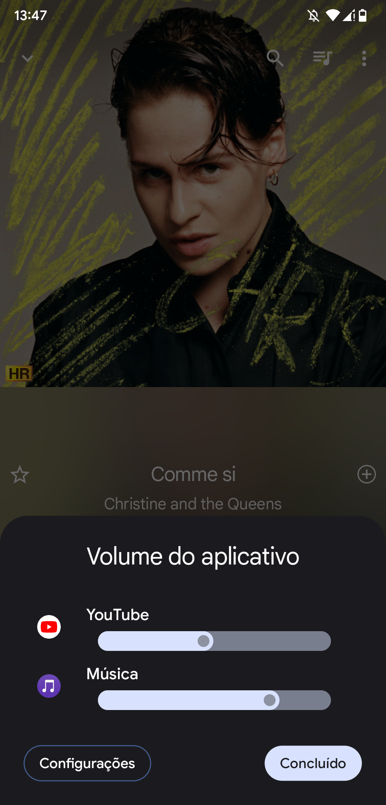

Básicamente a melhor coisa que tem no android é ouvir dois aúdios ao mesmo tempo, e isso não tem nativamente.
O que você precisa para ter isso é qualquer celular android, root e uma rom customizada.
ROOT: Em aparelhos Android, "root" refere-se a um nível de acesso privilegiado conhecido como "superusuário" ou "administrador" do sistema operacional. Quando um dispositivo Android é "rootado", significa que o usuário ganha acesso total e irrestrito a todas as partes do sistema, incluindo áreas que normalmente são protegidas do acesso comum.
A analogia mais próxima do termo "root" em aparelhos Android é a de um usuário administrador em um sistema operacional de computador, como o Windows ou o macOS. Esse usuário tem permissões elevadas que permitem realizar tarefas e alterações críticas no sistema, o que pode ser poderoso, mas também representa alguns riscos.
Vantagens do root em aparelhos Android:
Acesso total ao sistema: O usuário pode modificar ou substituir arquivos do sistema, aplicativos e configurações que normalmente não seriam acessíveis.
Instalação de ROMs customizada: É possível instalar versões customizadas do sistema operacional (ROMs) que oferecem recursos adicionais ou uma experiência de usuário diferente. Como versões puras do android (AOSP) e mais recentes.
Para fazer root no seu celular básicamente o que você precisa fazer é pesquisar no youtube o nome do seu celular + root
Você vai achar muitos vídeos de pessoas ensinando a fazer o root especificamente para o seu celular. Não é muito difícil.
Depois que você fazer o root no celular, para ter aúdios múltiplos você precisa de uma rom customizada que suporta controle de volume por aplicativo.
Isso na verdade é um pouco complicado de saber porque as vezes os criadores das roms não falam se tem ou não.
Você pode achar roms para o seu celular no site XDA Forums - XDA Developers, básicamente você procura o nome do seu celular no site e vai na opção ROMs, Kernels, Recoveries, & Other, do seu modelo. Vai ter diversas roms diferentes e versões de android diferentes.
Por exemplo, o do meu celular Pocophone F1 seria esse link: forum.xda-developers.com/f/xiaomi-poco-f1-roms-kernels-recoveries-other.8093/
Você faz os procedimentos e instala a rom que tenha controle de volume por aplicativo.
Na minha rom por exemplo tem uma opção em Sons e é só ativar.
É agora que vem a parte legal, como nativamente o android não suporta aúdios múltiplos, você precisa de um aplicativo especifico para desativar o áudio focus (foco em áudio) de cada aplicativo individual.
O app se chama App Ops e tem na play store, é de graça e faz tudo que a versão paga faz normalmente.
App Ops - Play Store
Depois que você baixar o aplicativo ele vai pedir permissão root do seu celular, você aceita e ele vai pedir para instalar outro aplicativo ou instalar um múdulo magisk.
Agora é só você ir em cada aplicativo que você quer aúdio múltiplo e desativar (ignorar) o foco em áudio. Por exemplo, Tidal, Spotify, TikTok, Instagram, Twitter, Youtube.
Desse jeito agora você poderá escutar dois ou mais áudios ao mesmo tempo no android, e definir volumes específicos para cada um também.
Por exemplo, você pode abrir uma música deixar tocando e abrir o TikTok, mutar o TikTok e deixar só a música enquanto vê o TikTok, o TikTok não irá mais parar a reprodução da música.
Você pode baixar várias versões do youtube revanced, instalar no seu celular e ver vários vídeos no youtube ao mesmo tempo e ainda difinir o volume de cada um.
Espero que no futuro isso seja padrão do android porque faz uma diferença significativa, seu celular virá básicamente um computador.